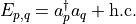
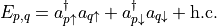

ofex.operators¶
This module provides tools and utilities for working with various quantum operators.
It includes tools for handling Fermionic and Qubit operators, symbolic operator manipulations, ordering operations, and type definitions.
ofex.operators.fermion_operator_tools¶
This module contains a collection of tools for manipulating and analyzing fermionic operators.
It provides utility functions and operator constructs to handle creation and annihilation operators, number operators, reflection operators, and excitation operators.
- ofex.operators.fermion_operator_tools.cre_ann(fermion_op: Tuple[Tuple[int, int], ...] | FermionOperator) Tuple[List[int], List[int]][source]¶
Extracts the lists of creation and annihilation operators from a fermionic operator.
- Parameters:
fermion_op – A SingleFermion or FermionOperator to extract operators from.
- Returns:
The list of the creation operators indices.
The list of the annihilation operators indices.
- Return type:
A tuple containing two lists
- ofex.operators.fermion_operator_tools.is_number_only(f: FermionOperator) bool[source]¶
Checks whether a FermionOperator is composed exclusively of number operators.
- Parameters:
f – The FermionOperator to check.
- Returns:
True if all terms in the operator represent valid number operators; otherwise, False.
- ofex.operators.fermion_operator_tools.normal_ordered_single(cre: List[int], ann: List[int]) Tuple[Tuple[int, int], ...][source]¶
Generates a SingleFermion operator in normal order.
In our convention, normal ordering implies terms are ordered from the highest tensor factor (on left) to lowest (on right). Also, ladder operators come first.
- Parameters:
cre – A list of indices for the creation operators.
ann – A list of indices for the annihilation operators.
- Returns:
A tuple representing the normal-ordered SingleFermion operator.
- ofex.operators.fermion_operator_tools.one_body_number(p: int, spin_idx: bool = True) FermionOperator[source]¶
Generates a one-body number operator for the specified index.
- For spin-indexed systems:
n_{p} (spin) = a†_{p} a_{p}
- For spatially indexed systems:
n_{p} (spatial) = n_{p,↑} + n_{p,↓} = a†_{p,↑} a_{p,↑} + a†_{p,↓} a_{p,↓}
- Parameters:
p – The index of the fermion.
spin_idx – Whether the index is spin-indexed or spatially indexed. Defaults to True.
- Returns:
A FermionOperator representing the number operator for the given index.
- ofex.operators.fermion_operator_tools.one_body_excitation(p: int, q: int, spin_idx: bool = True, hermitian: bool = True) FermionOperator[source]¶
Generates a one-body excitation operator for the specified indices.
If spin_idx is True, the indices are treated as spin-indexed, and the operator is defined as:

If spin_idx is False, the indices are treated as spatially indexed, and the operator is defined as:

Here, “h.c.” refers to the Hermitian conjugate, which is included only when hermitian is True. When included, the indices
 and
and  become indistinguishable in the resulting operator.
become indistinguishable in the resulting operator.- Parameters:
p (int) – The source fermion index.
q (int) – The target fermion index.
spin_idx (bool, optional) – If True, the indices are treated as spin-indexed. Defaults to True.
hermitian (bool, optional) – If True, the resulting operator is Hermitian. Defaults to True.
- Returns:
The generated one-body excitation operator.
- Return type:
FermionOperator
- ofex.operators.fermion_operator_tools.one_body_reflection(p: int, spin_idx: bool = True) FermionOperator[source]¶
Computes the reflection operator for a one-body term.
Reflections are expressed as: - r_{p} (spin) = 2 * n_{p} (spin) - 1 - r_{p} (spatial) = r_{p,↑} + r_{p,↓}
- Parameters:
p – The index of the fermion.
spin_idx – Whether to generate the operator in spin indexing. Defaults to True.
- Returns:
The FermionOperator representing the one-body reflection.
- ofex.operators.fermion_operator_tools.two_body_reflection(p: int, q: int, spin_idx: bool = True) FermionOperator[source]¶
Computes the two-body reflection operator as the product of two reflection terms.
- Parameters:
p – The first fermion index.
q – The second fermion index.
spin_idx – Whether to use spin indexing. Defaults to True.
- Returns:
The FermionOperator representing r_{p} * r_{q}.
ofex.operators.qubit_operator_tools¶
This module provides utility functions for operations related to QubitOperator and SinglePauli objects.
Functions included: - is_z_only: Checks if a QubitOperator contains only Z-type Pauli operators. - single_pauli_commute_chk: Determines whether two SinglePauli or QubitOperator objects commute. - normalize_by_lcu_norm: Normalizes a QubitOperator using Linear Combination of Unitaries (LCU) norms to ensure its eigenspectrum resides in [-1, 1].
- ofex.operators.qubit_operator_tools.is_z_only(op: QubitOperator) bool[source]¶
Check if a given QubitOperator consists only of Z-type Pauli operators,
- Parameters:
op (QubitOperator) – The QubitOperator to check.
- Returns:
True if the operator consists only of Z-type operators, False otherwise.
- Return type:
bool
- ofex.operators.qubit_operator_tools.single_pauli_commute_chk(op1: Tuple[Tuple[int, str], ...] | QubitOperator, op2: Tuple[Tuple[int, str], ...] | QubitOperator) bool[source]¶
Check if two single Pauli operators or QubitOperators commute.
- Parameters:
op1 (Union[SinglePauli, QubitOperator]) – The first operator to compare.
op2 (Union[SinglePauli, QubitOperator]) – The second operator to compare.
- Returns:
True if the operators commute, False otherwise.
- Return type:
bool
- Raises:
ValueError – If either operator has an imaginary coefficient.
- ofex.operators.qubit_operator_tools.normalize_by_lcu_norm(ham: QubitOperator, level: int = 1, **kwargs) Tuple[QubitOperator, float][source]¶
Normalize a QubitOperator using different methods to calculate its Linear Combination of Unitaries (LCU) norm.
The eigenspectrum of the normalized operator is guaranteed to be less than one, while this computation is much more efficient than normalization by spectral norm. Better normalization makes the spectrum more separated within the range [-1, 1], which corresponds to normalization using smaller norms.
This function supports multiple levels of normalization strategies. Before normalization, it ensures that any constant term in the Hamiltonian is removed.
- Parameters:
ham (QubitOperator) – The Hamiltonian to normalize.
level (int, optional) – Specifies the normalization strategy: - level = 0: Uses the Pauli 1-norm for normalization. - level = 1: Applies the Sorted Insertion (SI) method based on commutation relationships. - level = 2: Uses the optimally sorted insertion (SI) method that minimizes norms.
**kwargs – Additional arguments for optimization when level=2.
- Returns:
- A tuple where the first element is the normalized Hamiltonian,
and the second element is the calculated norm.
- Return type:
Tuple[QubitOperator, float]
- Raises:
ValueError – If the Hamiltonian contains a constant term or if the specified level is invalid.
ofex.operators.symbolic_operator_tools¶
- ofex.operators.symbolic_operator_tools.coeff(op: SymbolicOperator | QubitOperator | FermionOperator)[source]¶
Extracts the coefficient of a single-term operator.
- Parameters:
op (Operators) – The symbolic operator instance.
- Returns:
The coefficient of the single term if present.
- Return type:
float
- Raises:
ValueError – If the operator has zero or multiple terms.
- ofex.operators.symbolic_operator_tools.operator(op: SymbolicOperator | QubitOperator | FermionOperator)[source]¶
Extracts the term (keys) of a single-term operator.
- Parameters:
op (Operators) – The symbolic operator instance.
- Returns:
The term of the single-term operator.
- Raises:
ValueError – If the operator has zero or multiple terms.
- ofex.operators.symbolic_operator_tools.single_term(op: SymbolicOperator | QubitOperator | FermionOperator)[source]¶
Extracts a single term and its coefficient from the operator.
- Parameters:
op (Operators) – The symbolic operator instance.
- Returns:
A tuple containing the term and its coefficient.
- Return type:
tuple
- Raises:
ValueError – If the operator has zero or multiple terms.
- ofex.operators.symbolic_operator_tools.compare_operators(op1: SymbolicOperator, op2: SymbolicOperator, str_len=40, atol=1e-08) str[source]¶
Compares two symbolic operators and returns a string summary of their differences.
- Parameters:
op1 (SymbolicOperator) – The first symbolic operator for comparison.
op2 (SymbolicOperator) – The second symbolic operator for comparison.
str_len (int) – Maximum length for string representation of terms.
atol (float) – Absolute tolerance for comparing coefficients.
- Returns:
A formatted string showing the differences between the terms of the two operators.
- Return type:
str
- ofex.operators.symbolic_operator_tools.clean_imaginary(op: SymbolicOperator, atol=1e-08) SymbolicOperator[source]¶
Removes small imaginary components from operator coefficients.
- Parameters:
op (SymbolicOperator) – The symbolic operator to clean.
atol (float) – Absolute tolerance for the imaginary part.
- Returns:
A new operator with cleaned coefficients.
- Return type:
SymbolicOperator
- Raises:
ValueError – If any coefficient has an imaginary component exceeding the tolerance.
- ofex.operators.symbolic_operator_tools.is_constant(op: SymbolicOperator) bool[source]¶
Checks if the operator is constant.
- Parameters:
op (SymbolicOperator) – The symbolic operator to check.
- Returns:
True if the operator is constant, False otherwise.
- Return type:
bool
- ofex.operators.symbolic_operator_tools.dict_to_operator(op_dict, base) QubitOperator | FermionOperator[source]¶
Converts a dictionary of terms to a symbolic operator.
- Parameters:
op_dict (dict) – Dictionary where keys are terms and values are coefficients.
base (type) – The base operator type, either QubitOperator or FermionOperator.
- Returns:
The constructed symbolic operator.
- Return type:
Union[QubitOperator, FermionOperator]
- Raises:
TypeError – If the base type is not supported.
ValueError – If coefficients are not numeric or terms are invalid.
ofex.operators.ordering¶
This module provides various functionality for ordering operators. It includes a utility function order_abs_coeff that orders operators by absolute value of their coefficients.
- ofex.operators.ordering.order_abs_coeff(op: SymbolicOperator | QubitOperator | FermionOperator, reverse=False, atol=1e-08) List[SymbolicOperator | QubitOperator | FermionOperator][source]¶
Sorts the terms of an operator by the absolute value of their coefficients.
- Parameters:
op (Operators) – The operator containing terms to be sorted.
reverse (bool, optional) – Whether to sort in descending order. Defaults to False.
atol (float, optional) – Absolute tolerance; terms with coefficients below this tolerance are excluded. Defaults to EQ_TOLERANCE.
- Returns:
A list of operators with terms sorted by absolute coefficient values.
- Return type:
List[Operators]
ofex.operators.types¶
This module defines common data types and aliases used for working with symbolic, qubit, and fermionic operators in quantum computing.
- Exports:
Operators: A union of SymbolicOperator, QubitOperator, and FermionOperator.
SinglePauli: A tuple describing a single Pauli operator with its index and type.
SingleFermion: A tuple describing a fermion operator with its index and dagger status.